Тестирование можно пройти в любом удобном для вас месте и в удобное время, после чего вы получите сертификат. Главное — проходить тестирование в спокойной обстановке.
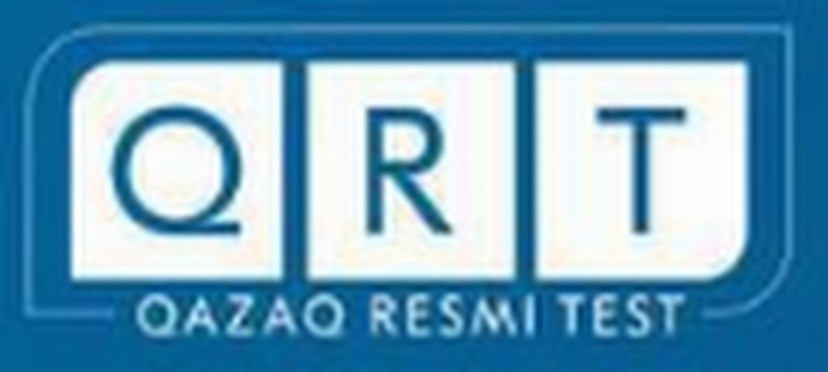
| Бөлім атауы | Ұпай саны |
|---|---|
| Тыңдалым | 10%/10% |
| Лексика және орфография | 8%/10% |
| Оқылым | 10%/10% |
| Жазылым | 21%/35% |
| Сұхбат | 7%/35% |
| Барлығы | 56% |
Тест состоит из 5 разделов и оценивает 5 языковых навыков. По итогам вы получаете уровень (от A1 до C2) и сертификат.
Никуда не нужно ехать. Тест можно пройти в удобное для вас время.
Сертификат приходит вместе с результатами. Скачать его можно в любое время.
Тест можно сдавать по желанию несколько раз.
Создайте личный кабинет на сайте.
Стоимость теста — 18 700 тенге.
Войдите в систему и выполните 5 разделов по порядку.
Через 2 рабочих дня результаты и сертификат появятся в личном кабинете.
5 разделов, всего 60 минут. Разделы проходятся по порядку на онлайн-платформе.
Уровень понимания основной идеи видеоматериала длительностью 1,5–2 минуты определяется через ответы на вопросы.
Определяется уровень знания орфоэпических, орфографических, лексических и грамматических норм.
Определяется навык чтения текстов различного содержания и понимания основных проблем.
Определяется навык составления аргументированного текста с раскрытием актуальности основной мысли.
Определяется навык аргументированного ответа на заданные вопросы в течение 5–10 минут.
Напишите текст — и сразу увидите ошибки и советы. Бесплатно, 3 раза в день.
Во время теста ведётся аудио- и видеонаблюдение. Кроме компьютера нужен смартфон — он снимает комнату как камера 360°.
Система не позволяет использовать другие программы, окна или вкладки. При нарушении результаты автоматически аннулируются.
Работы проверяют независимые эксперты. Они не видят ваше имя — только 32-символьный код.
Уровень зависит от набранного процента.
Систему используют:
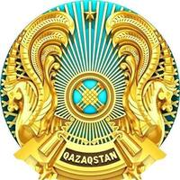
Государственные служащие Республики Казахстан↗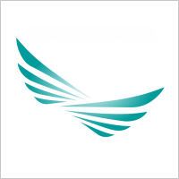
Кандидаты в Президентский молодёжный кадровый резерв↗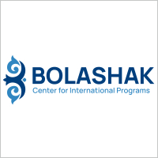
Кандидаты международной программы «Болашак»↗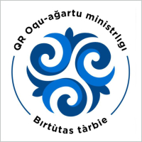
Министерство просвещения РК (кандидаты на должность первого руководителя государственной организации образования)↗ Сотрудники Агентства РК по регулированию и развитию финансового рынка↗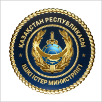
Сотрудники органов внутренних дел РК↗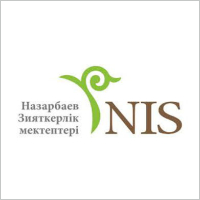
Сотрудники Назарбаев Интеллектуальных школ↗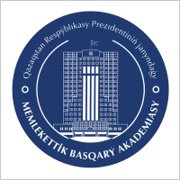
Кандидаты, поступающие в магистратуру и докторантуру Академии государственного управления↗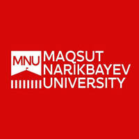
Поступающие в Maqsut Narikbayev University↗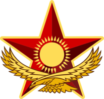
Министерство обороны РК (военнослужащие Вооружённых Сил РК)↗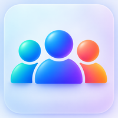
Физические лица, желающие владеть казахским языком на официально-деловом уровнеВыберите удобный вариант.
В рамках некоторых организаций и программ выдаются промокоды, позволяющие пройти тестирование бесплатно или со скидкой.
Пособие о том, как подготовиться к тесту (ISBN 978-601-287-226-2).
К сдаче QAZAQ RESMI TEST готовят только в Академии государственного управления при Президенте РК. Платные курсы на 24 и 36 часов, групповые и индивидуальные.
Телефон: 8 (7172) 75-32-70
QAZAQ RESMI TEST – онлайн тестовая система определения уровня владения казахским языком.
Тест проходит в онлайн режиме. После регистрации вы производите оплату за тест, а затем проходите в систему. Вы можете пройти разделы тестирования в любое удобное для вас время. Система работает 7/24.
Стоимость прохождения QAZAQ RESMI TEST – 18 700 (восемнадцать тысяч семьсот) тенге.
Для этого необходимо направить заявку на почту info@qrt.kz с указанием реквизитов организации и количества сотрудников. Все бухгалтерские документы, включая счёт на оплату, будут направлены вам на почту. После подтверждения оплаты ваши сотрудники смогут пройти тест в любое удобное для них время, а вы сможете получить их сертификаты на почту.
Таблица уровней
QAZAQ RESMI TEST состоит из 5 разделов, которые проходятся последовательно друг за другом. ВАЖНО пройти весь тест сразу, то есть завершить все 5 разделов за одну попытку.
QAZAQ RESMI TEST необходимо пройти сразу за один раз. Он состоит из 5 разделов, которые проходятся последовательно друг за другом. ВАЖНО пройти весь тест сразу, то есть завершить все 5 разделов за одну попытку.
К сдаче QAZAQ RESMI TEST готовят только в Академии государственного управления при Президенте Республики Казахстан. Здесь на постоянной основе работают платные 24 и 36-часовые курсы подготовки к сдаче QAZAQ RESMI TEST. Курсы предполагают как групповое, так и индивидуальное обучение. Телефон для справок: 8 (7172) 75-32-70
Результаты теста по всем разделам будут доступны в течение 2 рабочих дней. Сертификат об определении языкового уровня будет направлен в ваш личный кабинет.
В личный кабинет вместе с результатами будет выслан и сертификат. Вы можете получить его в любое время.
QAZAQ RESMI TEST можно сдавать по желанию несколько раз.
Действительность сертификата зависит от результатов теста и уровня.
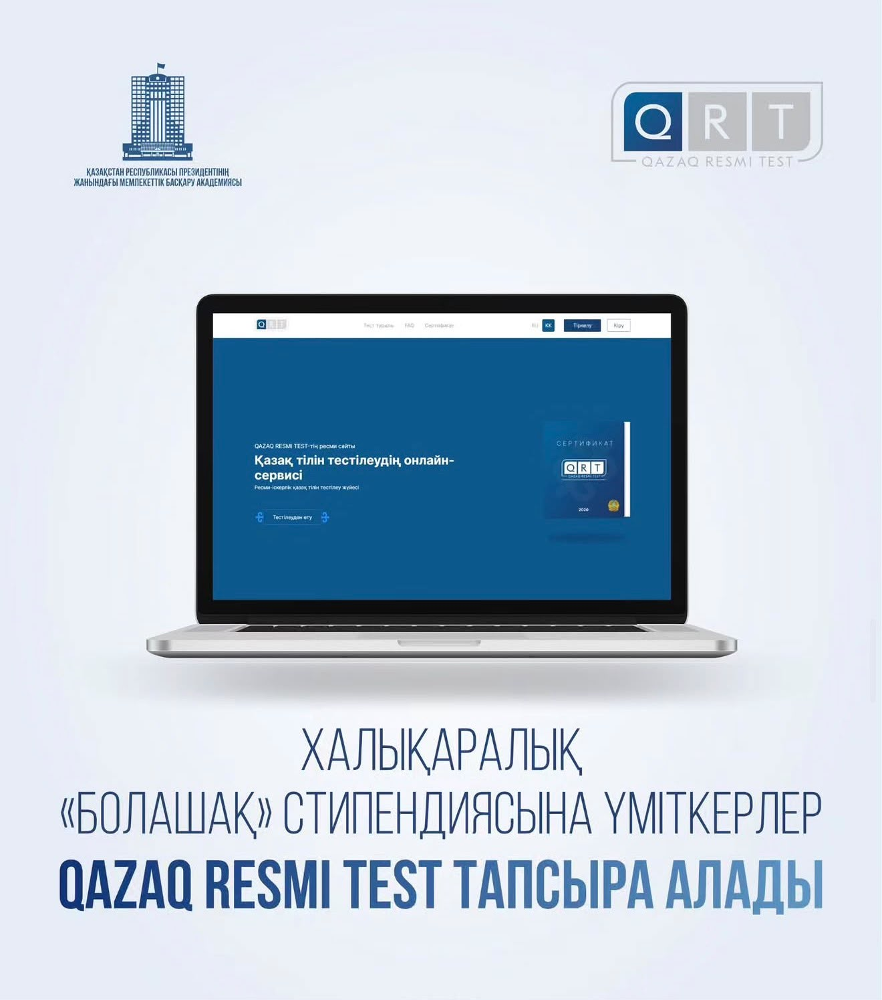
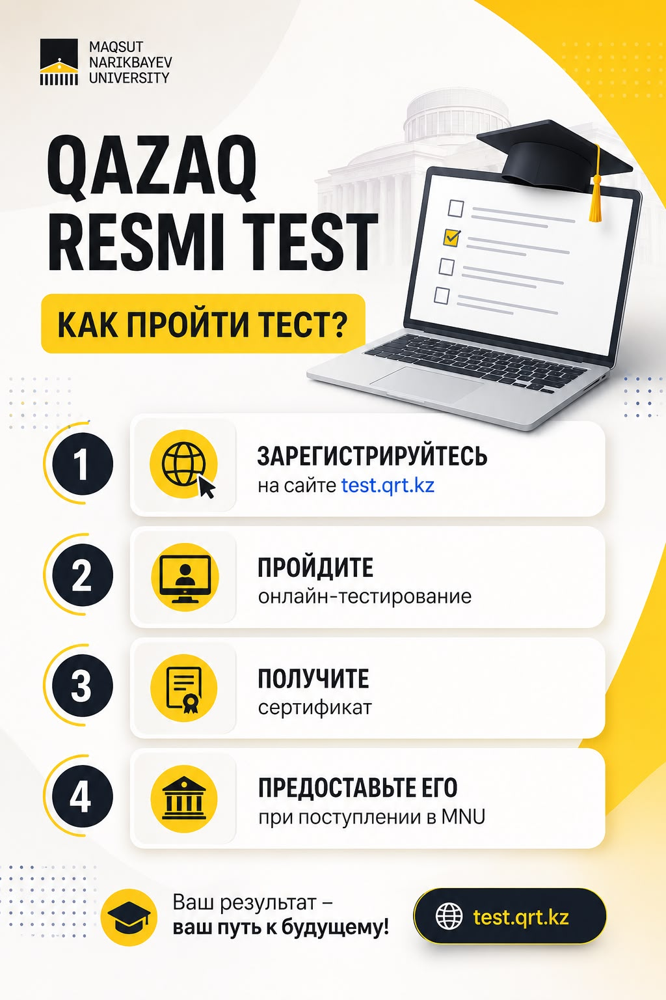
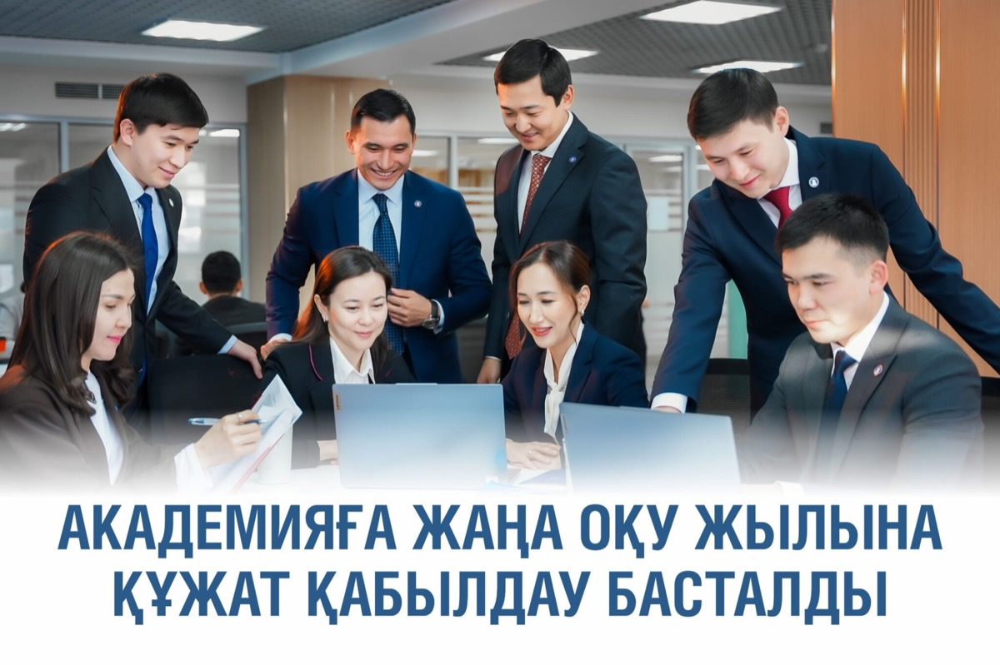
Остались вопросы? Напишите нам — поможем.
📍 Республика Казахстан, 010000, г. Астана